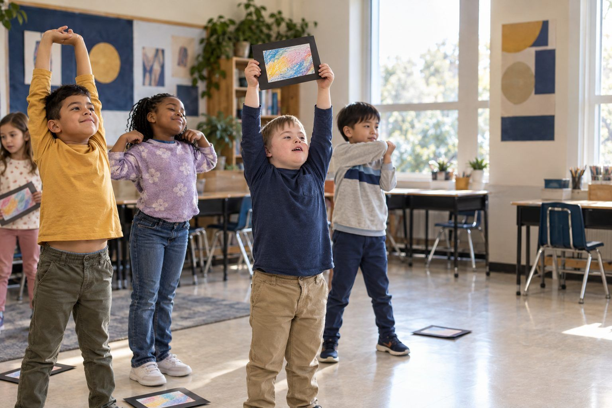

Aprendizaje estudiantil · Grados K–2 · 30 minutos
Tiempo de pantalla, tiempo verde
Los niños clasifican actividades de todos los días, notan cómo responden su cuerpo y sus sentimientos al quedarse quietos y al moverse, y hacen un plan de equilibrio familiar, aprendiendo que las pantallas no son malas y que las decisiones importan.
Los niños oyen a los adultos preocuparse mucho por las pantallas. Esta lección les da algo más útil que la preocupación: notar y elegir. Los niños clasifican tarjetas de actividades en Tiempo de pantalla, Tiempo verde (sin pantalla) y Los dos, y descubren que las pantallas pueden ayudarnos a aprender, crear y comunicarnos con las personas que queremos. Luego hacen un breve Chequeo del cuerpo: se quedan quietos mirando una "pantalla" de papel, después se mueven, y notan qué cambia en sus ojos, su cuerpo y sus sentimientos. Terminan dibujando un plan de equilibrio que se llevan a casa para hacerlo con su familia. El mensaje es honesto: las pantallas no son malas ni buenas por sí solas; lo que importa es cómo las usamos y para qué otras cosas hacemos tiempo.
En este paquete
- Hoja A: ¿Pantalla o verde? (clasificación de tarjetas)
- Hoja B: Mi chequeo del cuerpo (organizador)
- Hoja C: Nuestro plan de equilibrio familiar (hoja de trabajo)
- Clave del facilitador (última página)
Indicadores ELE de TCEA
- S4.3 Soy consciente de mis fortalezas de aprendizaje y de los aspectos que puedo mejorar.
- S4.1 Sé cómo asumir la responsabilidad de mi propio aprendizaje.
- S4.2 Puedo fijar metas alcanzables y dar seguimiento a mi progreso.
- S3.2 Puedo comunicar mis ideas con claridad a los demás.
Guía completa para el facilitador: mglearn.github.io/eles/es/activities/screen-time-green-time.html
Hoja A de Tiempo de pantalla, tiempo verde
¿Pantalla o verde?
Lee cada tarjeta en voz alta. ¿Es tiempo de pantalla, tiempo verde (sin pantalla) o los dos? Algunas tarjetas pueden tener más de una buena respuesta. ¡Di por qué!
Tiempo de pantalla
Tiempo verde
Los dos
Hoja A de Tiempo de pantalla, tiempo verde
¿Pantalla o verde?: tarjetas para clasificar
Recorta las tiras. Coloca cada una en el tapete de clasificación y prepárate para explicar por qué.
Jugar a las traes afuera en el recreo
Ver una caricatura en una tableta
Hacer una videollamada con la abuela para enseñarle tu diente nuevo
Bailar con un video musical
Construir una torre de bloques con un amigo
Hacer un dibujo con crayones
Jugar un juego para contar en una tableta
Buscar con un adulto una foto de una rana de verdad y luego salir a buscar una
Leer un libro de papel antes de dormir
Tomarle una foto a una flor durante un paseo con tu familia
Ayudar a preparar la cena
Seguir un video para aprender a doblar un avión de papel y luego hacerlo volar
Hoja B de Tiempo de pantalla, tiempo verde
Mi chequeo del cuerpo
Después de cada minuto, dibuja una carita o escribe una palabra en cada recuadro. No hay respuestas incorrectas. ¡Solo fíjate!
| Después de… | Mis ojos se sienten | Mi cuello y mi espalda se sienten | Mis ganas de moverme están | Mis sentimientos son |
|---|---|---|---|---|
| 1 minuto quieto con mi pantalla de mentiritas | ||||
| 1 minuto moviendo mi cuerpo | ||||
| ¿Qué cambió? |
Hoja C de Tiempo de pantalla, tiempo verde
Nuestro plan de equilibrio familiar
Empiézalo en la escuela. Termínalo en casa con tu familia. Nota para la familia: las pantallas no son malas; estamos practicando elegir, notar y equilibrar. Por favor, conversen juntos sobre el plan y ayuden a su hijo o hija a llenar el último recuadro.
Dibuja una opción de pantalla que me encanta y que me ayuda a aprender, hacer cosas o hablar con las personas que quiero.
Dibuja dos opciones de tiempo verde (sin pantalla) que quiero hacer esta semana.
Mi señal para parar: sé que es hora de un descanso cuando…
Cuando sea hora de parar, puedo decir: "Un minuto más, luego voy a ___."
En casa con mi familia: un momento o un lugar sin pantallas que elegimos juntos (como la cena o la hora de dormir):
Solo para el facilitador: Tiempo de pantalla, tiempo verde
Clave de respuestas y notas
Hoja A: ¿Pantalla o verde?
| Elemento | Categoría | Por qué |
|---|---|---|
| Jugar a las traes afuera en el recreo | Tiempo verde | Sin pantalla, y todo tu cuerpo se mueve. |
| Ver una caricatura en una tableta | Tiempo de pantalla | Una pantalla y un cuerpo quieto. Es divertido, y es bueno equilibrarlo. |
| Hacer una videollamada con la abuela para enseñarle tu diente nuevo | Tiempo de pantalla | Una pantalla que nos ayuda a comunicarnos con las personas que queremos. |
| Bailar con un video musical | Los dos | Usas una pantalla, y tu cuerpo se mueve. |
| Construir una torre de bloques con un amigo | Tiempo verde | Sin pantalla; las manos y las ideas trabajan juntas. |
| Hacer un dibujo con crayones | Tiempo verde | Sin pantalla; estás haciendo algo. |
| Jugar un juego para contar en una tableta | Tiempo de pantalla | Una pantalla que te ayuda a aprender. |
| Buscar con un adulto una foto de una rana de verdad y luego salir a buscar una | Los dos | Una pantalla te ayudó a aprender, y luego saliste a explorar. |
| Leer un libro de papel antes de dormir | Tiempo verde | Sin pantalla; una manera tranquila de prepararte para dormir. |
| Tomarle una foto a una flor durante un paseo con tu familia | Los dos | Una pantalla te ayuda a recordar algo que viste afuera. |
| Ayudar a preparar la cena | Tiempo verde | Sin pantalla; estás ayudando a tu familia. |
| Seguir un video para aprender a doblar un avión de papel y luego hacerlo volar | Los dos | Una pantalla te enseñó, y luego hiciste algo y jugaste. |